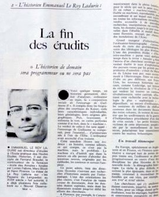

la fin de l’historien programmeur?
frédéric clavert
DH@LLM
03/07/2025
historien programmeur

une écriture discrète
vibe writing
dialoguer avec les sources
maïeutique stochastique
de l’écriture historienne du code
le dernier kilomètre
qui écrit?
enseignement
conclusion: une écriture au ressenti?